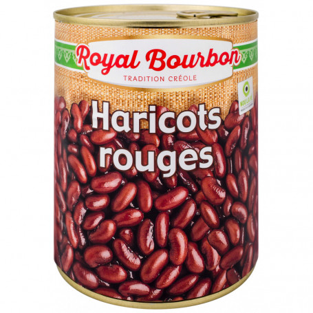

Les Pois rouges sont un plat traditionnel antillais. Ils sont servi principalement lors d'évènements. Le plat est souvent accompagné de riz et d'une viande de cochon roussi. Cependant, au niveau de la viande, il est tout à fais possible de varié entre poisson, viande blanche, ou viande rouge.
La veille, prendre les haricots rouges et les laisser trempés, jusqu'au lendemain, dans trois fois le volumes d'eau. Les pois vont se gorger d'eau et tomber au fond de l'eau.
Haché finement les oignons et le persil, ajouter dans une cocotte la préparation, ajouter le bois d'inde et un quart du piment végétarien. Faire revenir le tout durant 3 min.
Vider l'eau des haricots rouges. Mettre les pois dans la cocotte et ajouter 3 fois le volume d'eau. Fermer la cocotte, et laisser bouillir durant environ 30-45 min.
Dépressuriser la cocotte puis remettre à feu doux. ajouter les gousse d'ail et le piment végétarien fendu en deux. Ajouter, les clous de girofles, le curcuma et rectifié le tout.
Laisser cuire à feu doux et écraser le long de la parois 1/5 des haricots pour aider la solution à s'épaissir.
Servir accompagné de riz. Une fois refroidi la sauce s'épaissit de nouveau